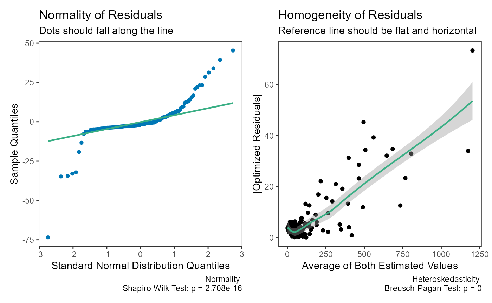

Deming Regression
Aaron R. Caldwell
Last Updated: 2023-02-04
Deming.RmdBackground
Error-in-variables (EIV) models are useful tools to account for measurement error in the independent variable. For studies of agreement, this is particularly useful where there are paired measurements of the paired measurements (X & Y) of the same underlying value (e.g., two assays of the same analyte).
Deming regression is one of the simplest forms of of EIV models promoted by W. Edwards Deming1. The first to detail the method were Adcock (1878) followed by Kummell (1879) and Koopmans (1936). The name comes from the popularity of Deming’s book (Deming 1943), and within the field of clinical chemistry, the procedure was simply referred to as “Deming regression” (e.g., Linnet (1990))
Code Demostration
Simple Deming Regression
We can start by creating some fake data to work with.
library(SimplyAgree)
dat = data.frame(
x = c(7, 8.3, 10.5, 9, 5.1, 8.2, 10.2, 10.3, 7.1, 5.9),
y = c(7.9, 8.2, 9.6, 9, 6.5, 7.3, 10.2, 10.6, 6.3, 5.2)
)Also, we will assume, based on historical data, that the measurement error ratio is equal to 4.
The data can be run through the dem_reg function and the
results printed.
dem1 = dem_reg(x = "x",
y = "y",
data = dat,
error.ratio = 4,
weighted = FALSE)
dem1
#> Deming Regression with 95% C.I.
#> coef bias se df lower.ci upper.ci t p.value
#> Intercept -0.08974 -0.044938 1.7220 8 -4.0607 3.881 -0.05212 0.9597
#> Slope 1.00119 0.003529 0.1872 8 0.5696 1.433 0.00638 0.9951The resulting regression line can then be plotted.
plot(dem1)
The assumptions of the Deming regression model, primarily normality
and homogeneity of variance, can then be check with the
check method for Deming regression results. Both plots
appear to be fine with regards to the assumptions.
check(dem1)Weighted Deming Regression
For this example, I will rely upon the “ferritin” data from the
deming R package.
library(deming)
data('ferritin')
head(ferritin)
#> id period old.lot new.lot
#> 1 1 1 1 1
#> 2 2 1 3 3
#> 3 3 1 10 9
#> 4 4 1 13 11
#> 5 5 1 13 12
#> 6 6 1 15 13Let me demonstrate the problem with using simple Deming regression when the weights are helpful. When we look at the two plots below, we can see there is severe problem with using the “un-weighted” model.
dem2 = dem_reg(
x = "new.lot",
y = "old.lot",
data = ferritin,
weighted = FALSE
)
dem2
#> Deming Regression with 95% C.I.
#> coef bias se df lower.ci upper.ci t p.value
#> Intercept 5.2157 -0.235818 2.18603 160 0.8985 9.533 2.386 0.01821
#> Slope 0.9637 0.002597 0.02505 160 0.9143 1.013 -1.448 0.14949
check(dem2)
Now, let us see what happens when weighted is set to
TRUE.
dem2 = dem_reg(
x = "new.lot",
y = "old.lot",
data = ferritin,
weighted = TRUE
)
dem2
#> Weighted Deming Regression with 95% C.I.
#> coef bias se df lower.ci upper.ci t p.value
#> Intercept -0.02616 0.0065148 0.033219 160 -0.09176 0.03945 -0.7874 4.322e-01
#> Slope 1.03052 -0.0001929 0.006262 160 1.01815 1.04288 4.8729 2.626e-06
plot(dem2)
check(dem2)
Calculative Approach
Deming regression assumes paired measures (\(x_i, \space y_i\)) are each measured with error.
\[ x_i = X_i + \epsilon_i \]
\[ y_i = Y_i + \delta_i \] We can then measure the relationship between the two variables with the following model.
\[ \hat Y_i = \beta_0 + \beta_1 \cdot \hat X_i \] Traditionally there are 2 null hypotheses
First, the intercept is equal to zero
\[ H_0: \beta_0 = 0 \space vs. \space H_1: \beta_0 \ne 0 \] Second, that the slope is equal to one \[ H_0: \beta_1 = 1 \space vs. \space H_1: \beta_0 \ne 1 \]
Measurement Error
A deming regression model also assumes the measurement error (\(\sigma^2\)) ratio is constant.
\[
\lambda = \frac{\sigma^2_\epsilon}{\sigma^2_\delta}
\] In SimplyAgree, the error ratio can be set with
the error.ratio argument. It defaults to 1, but can be
changed by the user. If replicate measures are taken, then the user can
use the id argument to indicate which measures belong to
which subject/participant. The measurement error, and the error ratio,
will then be estimated from the data itself.
If the data was not measured in replicate then the error ratio (\(\lambda\)) can be estimated from the coefficient of variation (if that data is available) and the mean of x and y (\(\bar x, \space \bar y\)).
\[ \lambda = \frac{(CV_y \cdot \bar y)^2}{(CV_x \cdot \bar x)^2} \]
Weights
In some cases the variance of X and Y may increase proportional to
the true value of the measure. In these cases, it may be prudent to use
“weighted” Deming regression models. The weights used in
SimplyAgree are the same as those suggested by Linnet (1993).
\[ \hat w_i = \frac{1}{ [ \frac{x_i + \lambda \cdot y_i}{1 + \lambda}]^2} \]
Weights can also be provided through the weights
argument. If weighted Deming regression is not selected
(weighted = FALSE), the weights for each observation is
equal to 1.
The estimated mean of X and Y are then estimated as the following.
\[ \bar x_w = \frac{\Sigma^{N}_{i=1} \hat w_i \cdot x_i}{\Sigma^{N}_{i=1} \hat w_i} \]
\[ \bar y_w = \frac{\Sigma^{N}_{i=1} \hat w_i \cdot y_i}{\Sigma^{N}_{i=1} \hat w_i} \]
Estimating the Slope and Interept
First, there are 3 components (\(v_x, \space v_y, \space cov_{xy}\))
\[ v_x = \Sigma_{i=1}^N \space \hat w_i \cdot (x_i- \bar x_w)^2 \] \[ v_y = \Sigma_{i=1}^N \space \hat w_i \cdot (y_i- \bar y_w)^2 \] \[ cov_{xy} = \Sigma_{i=1}^N \space \hat w_i \cdot (x_i- \bar x_w) \cdot (y_i- \bar y_w) \]
The slope (\(b_1\)) can then be estimated with the following equation.
\[ b_1 = \frac{(\lambda \cdot v_y - v_x) + \sqrt{(v_x-\lambda \cdot v_y)^2 + 4 \cdot \lambda \cdot cov_{xy}^2}}{2 \cdot \lambda \cdot cov_{xy}} \] The intercept (\(b_0\)) can then be estimated with the following equation.
\[ b_0 = \bar y_w - b_1 \cdot \bar x_w \] The standard errors of b1 and b0 are both estimated using a jackknife method (detailed by Linnet (1990)).
References
Deming was a titan of the fields of statistics and engineering and I would highly recommend reading some of his academic work and books↩︎